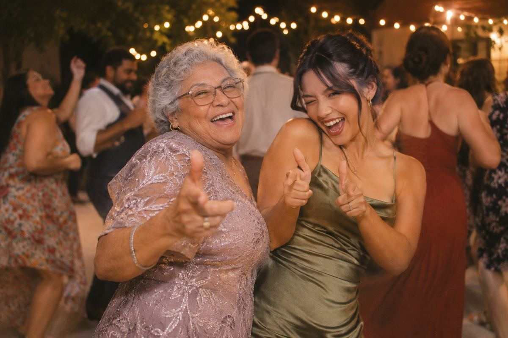

Wedding Photo Scavenger Hunt: 75 Prompts + Printable Card
Prompts for every part of the night, plus rules, prizes and a morning-after finale.

Short answer: A wedding photo scavenger hunt gives guests a short list of photo prompts, such as “three generations on the dance floor” or “the room raising glasses, shot from the back,” to capture during the reception. Use 8 to 12 prompts per card, collect every photo in one shared place, and reveal the results together the next morning with small prizes for the best shots.
This guide gives you 75 prompts sorted by the part of the night they fit, a ready-to-print 10-prompt card, prize ideas that cost next to nothing, and the step most lists skip: getting the photos back from a hundred different phones. Nearly every prompt works for kids and grandparents alike, and none of them asks anyone to embarrass a friend.
What is a wedding photo scavenger hunt?
It’s a reception game where guests get a list of things to photograph and tick them off over the course of the night. Some prompts are easy (“something blue”), some need a little nerve (“two people who just met, doing the same pose”), and the best ones send guests to corners of the party they’d never visit otherwise.
It works for three reasons. Your photographer can’t be at every table, but your guests already are. Quiet guests get an excuse to start a conversation. And kids get a job, which keeps them busy through dinner.
The game is only as good as the photos that come back, though. A hunt that ends with 40 guests each holding ten photos on their own phone is a hunt you’ll never see. Decide where the photos go before you print a single card.
How to run a wedding photo scavenger hunt, step by step
- Pick where the photos go. A shared album, an upload link or a shared camera app. Everything else follows from this choice.
- Choose 8 to 12 prompts per card. Mix about four easy ones, four or five that take some effort and one or two long shots.
- Decide on solo or team play. One card per guest or couple suits smaller weddings. One card per table suits big seated dinners.
- Print the join path on the card. Prompts on the front; the QR code and one line of instructions on the back.
- Set the window. Start at cocktail hour and stop at the last dance. Leave the ceremony out of it.
- Announce it twice. Once with a sign at cocktail hour, once from the DJ or MC right before the dancing starts.
- Reveal and hand out prizes the next morning, at a brunch or in a group text with the winning photos.
Here’s a line your MC can read word for word:
“Quick one before the dance floor opens: there’s a photo scavenger hunt card on every table. Scan the code on the back, shoot as many prompts as you can before the last song, and the couple will hand out prizes at brunch tomorrow.”
Printed card, table card or app?
| Format | Works best for | How photos come back | Watch out for |
|---|---|---|---|
| Printed card per guest or couple | Smaller weddings and mixed ages | Through whatever upload path you print on the back | Cards left on chairs; print extras |
| One card per table (team play) | Big seated dinners and shy crowds | Teammates all add to the same place | One phone doing all the work; ask each table to pick a captain |
| A scavenger-hunt app with points | Competitive groups who want automatic scoring | Inside the app | Every guest has to join; check pricing and account rules |
| Printed prompts plus a shared camera | Couples who want one roll and a surprise | One shared film, hidden until the reveal | Set it up a week ahead and check guest limits |
How many prompts per card?
Eight to 12. Fewer than eight and the game is over before the salads are cleared; more than 12 and people give up halfway. Ten is a good default because it fits on a 4 × 6 inch card in type people can read in low light.
Count cards against your guest list. The Knot’s 2026 Real Weddings Study reported an average of 117 guests for 2025 weddings. At that size, one card per table of 8 to 10 means 12 to 15 cards (117 ÷ 10 ≈ 12; 117 ÷ 8 ≈ 15), and one card per couple or household means roughly 60. Print about 10 percent extra, because cards get spilled on.
Prizes that cost almost nothing
Give out several small prizes instead of one big one: best photo, funniest photo, most prompts finished, best kids’ photo and the couple’s pick. Ideas that people actually remember:
- A framed print of their winning photo, tucked in with your thank-you card.
- Their shot as the opening photo of your wedding slideshow or thank-you card.
- A bottle of whatever the signature cocktail was built on.
- A local treat from where you married: coffee beans, hot sauce, a jar of honey.
- A handwritten certificate naming them “Official Wedding Photographer (Unpaid).”
- The leftover pastries from brunch, boxed up to take home.
75 wedding photo scavenger hunt ideas, by moment
Pull two or three from each group so the card lasts the whole night. Prompts with other guests in them assume a quick “mind if I get a photo?” first.
Cocktail hour (12 prompts)
- The guest who traveled farthest, pointing toward home.
- Two people who just met, doing the same pose.
- Someone holding two drinks, one of them for somebody else.
- The signature cocktail held up to the light.
- A guest wearing the wedding colors who isn’t in the wedding party.
- The best shoes in the room, shot from ankle height.
- The person who has known the couple longest, next to the person who met them most recently.
- Someone mid-story about how they know the couple.
- A detail the couple clearly made or chose themselves.
- The ceremony spot, now empty, from where you sat.
- A guest signing the guest book, pen still moving.
- Your group copying a pose from the couple’s engagement photos.
Dinner (12 prompts)
- Your whole table pulling the same face on the count of three.
- Someone mid-bite of the best thing on the menu.
- The oldest and youngest guests at your table, side by side.
- Your table number, held by whoever has been to the most weddings.
- A “family portrait” of your table, posed like you’re all related.
- Every hand at the table stacked in the middle.
- Something blue on your table (a phone screen doesn’t count).
- Two tables toasting each other across the gap.
- A napkin folded into anything recognizable.
- The table next to yours, waving back.
- Your plate, shot the way a food critic would.
- Whoever at your table cried during the vows (they’ll admit it).
Toasts and speeches (8 prompts)
- The speaker’s notes, whether that’s cue cards or the back of a menu.
- The couple’s faces at the most embarrassing line.
- A parent or grandparent dabbing their eyes.
- The whole room raising glasses, shot from the very back.
- Someone laughing so hard they cover their face.
- The speaker’s friends cheering from their table.
- The microphone changing hands.
- A guest mouthing along to a line they clearly helped write.
Dance floor (12 prompts)
- The first dance from exactly where you’re standing.
- Three generations in one frame, all dancing.
- Someone teaching someone else a move.
- The first pair of shoes abandoned at the edge of the floor.
- A dip that isn’t the couple.
- The DJ or the band mid-song.
- The moment the whole floor fills for one song.
- A group mid-jump, every foot off the ground.
- A kid dancing on a grown-up’s feet.
- Any line dance, shot from the front of the line.
- A couple married longer than the newlyweds have been alive, slow dancing.
- A blurry photo, on purpose, that still feels like the night.

Late night (9 prompts)
- The last slice of cake and the person about to eat it.
- Someone carrying someone else’s shoes.
- The late-night snack arriving.
- A tie worn somewhere a tie doesn’t belong.
- The send-off from inside the tunnel of sparklers, bubbles or petals.
- The quietest corner of the party and whoever found it.
- The getaway car (or rideshare, or golf cart).
- The last people on the dance floor when the lights come up.
- The couple’s empty chairs at the end of the night.
Kids’ list (10 prompts)
Print this one on its own card in bigger type. Kids shoot on a parent’s phone and only photograph people who say yes.
- Something the same color as the flowers.
- A grown-up making their silliest face.
- Your shoes next to the biggest shoes you can find.
- The tallest person at the wedding.
- The wedding cake (look, don’t touch).
- A flower that fell on the ground.
- The couple, from exactly your height.
- A grown-up dancing. Any dancing counts.
- Something that sparkles.
- Your favorite person at the wedding, smiling.
Just for the couple (12 prompts)
You’ll be busy, so hand this card and your phone to a friend who stays close and shoots on your behalf.
- Each other, from across the room during cocktail hour.
- Both sets of parents in the same frame.
- A guest you haven’t seen in years.
- Your wedding party laughing, not posing.
- Your hands and rings on the dinner table.
- The view from your seats at dinner.
- The first guest on the dance floor.
- Your oldest guest, with both of you.
- The detail you debated longest during planning.
- The table having the most fun.
- A quick photo with your photographer, who is rarely in one.
- The moment you finally sit down to eat.
A printable wedding photo scavenger hunt card
Copy this into any card template, fill in the brackets and print it on 4 × 6 inch cardstock. Keep the front for prompts and put the QR code on the back, at least an inch wide with a white margin around it. Test one card on an iPhone and an Android phone before you print the whole batch.
WEDDING PHOTO SCAVENGER HUNT · [Names] · [Date]
Shoot as many as you can before the last song. One photo per prompt. Best shots win prizes at brunch tomorrow.
1. Two people who just met, doing the same pose
2. The guest who traveled farthest, pointing toward home
3. Your whole table pulling the same face
4. Something blue (a phone screen doesn’t count)
5. The couple laughing, not posing
6. The room raising glasses, shot from the back
7. Three generations on the dance floor
8. A dip that isn’t the couple
9. The first pair of shoes abandoned by the dance floor
10. The best moment of the night that isn’t on this card
On the back: Scan to add your photos. [Photos stay hidden until 10:30 a.m. tomorrow.] Please keep the ceremony phone-free and give our photographer room to work.
Want a matching sign for the welcome table? Our wedding guest photo plan includes a free printable QR table sign, and these wedding QR code sign wordings cover every tone from classic to silly.
How to collect the photos: one shared roll beats 30 camera rolls
If guests shoot on their own phones and you plan to ask for the photos later, most of them will stay where they were taken. People mean to send them. Then Monday happens. The fix is a single place every guest adds to during the night, printed right on the card.
- A shared album. Free and familiar. Google’s help page says that when you share a link to an album, anyone with the link can view the photos and add to it, and Apple says friends can join an iCloud shared album created on iOS 27 or later and contribute photos on the web, even without an Apple Account or Apple device. The catch for a game: everyone sees every photo as it lands, so the finale is spoiled by dessert.
- An upload link, such as a Google Drive folder or a Dropbox file request. Photos don’t appear publicly, which keeps the surprise, but you’ll be sorting a pile of files afterward to work out who shot what.
- A shared camera app with a timed reveal. Every guest shoots into one roll from a QR code, and the photos stay hidden until a time you pick. That’s the closest match to how a scavenger hunt wants to work.
For a side-by-side look at nine methods, including costs and Android support, see how to collect photos from wedding guests.
Running the hunt with Filmsera
Filmsera is a shared disposable camera app for iPhone, and a scavenger hunt fits the way it works. Here’s the setup, best done the week before:
- Create a film named for the wedding. For the reveal time, choose Custom and set it for brunch time the morning after. (Tonight, Tomorrow and In 3 days all develop at 9 p.m., so they won’t give you a morning reveal.)
- Set shots per guest. Quick setup gives each guest 12, which covers a 10-prompt card with two spare. You can raise it to 24 on a free or Party film, or 36 on Celebration and Wedding films, if you want room for candids.
- Pick one film look. It’s locked for the whole roll, so every guest’s photos match.
- Tap “Save QR” on the invite card and add the code to the back of every scavenger card.
- Let guests join. They scan, type their name and shoot from their phone’s browser, with no app or account. iPhone guests can use the free Filmsera app instead.

Nobody, including you, can see the photos until the reveal. At brunch the whole film appears at once for everyone in it, each photo tagged with who took it, so you know exactly whom to hand the prize to. The app also builds a short vertical recap reel set to music.
The honest limits, as of November 2026: the host needs an iPhone, browser guests shoot photos only (no video clips), and a free film covers up to 10 guests, so most weddings will use a one-time pass for that film (not a subscription). A pass keeps the film’s photos for a year; free films keep them for 30 days after the reveal, so save the winners to your phone either way. The Filmsera for weddings page has the full details.
Filmsera gives every guest one shared film from a QR code, keeps the hunt hidden until the morning after, and tags every shot with its photographer. Get Filmsera on the App Store
The morning-after reveal: judging and prizes
Reveal the hunt the next morning, not at midnight. People are rested, the photos are new to everyone, and you get to see your wedding from 40 angles at once. If you’re hosting a post-wedding brunch, make the reveal the main event: everyone opens the photos together and you announce winners between coffee refills.
- Judge by category. Five small awards beat one big one, and more guests go home with something.
- Let the couple choose. Ten minutes with coffee is enough to scroll the roll and pick favorites.
- Or let the room vote. Show the top three in each category and go by applause.
- Not doing a brunch? Text each winner’s photo to the group with a one-line award, then mail the prizes with your thank-you cards.
Rules that keep it fun (and keep your photographer happy)
The Knot’s 2026 study found that 88% of couples hired a photographer, so assume your hunt will share the room with a professional and write the prompts around them.
- The ceremony is off the list. If it’s unplugged, say on the card that the hunt starts at cocktail hour.
- Don’t block the pro. No prompts that pull guests into the aisle, onto the floor during the first dance or between the photographer and the couple.
- Other guests say yes first. Anyone can opt out of being photographed, no questions asked.
- Kids play with a parent’s OK, and their photos stay in your private album, not on social media.
- Nothing that singles people out. Skip prompts like “someone who’s single,” “the drunkest guest” or anything about an ex.
- Put posting rules on the card. If you’d like to share the first photos yourselves, say so: “Please don’t post until we do.”
Looking for more ways to keep the reception lively? Our list of wedding reception games for guests sorts 30 ideas by when they fit in the night.
FAQ
How many prompts should a wedding photo scavenger hunt have?
Between 8 and 12 per card. Ten is the sweet spot: enough to last from cocktail hour to the last dance, and short enough to fit on a 4 × 6 inch card in readable type. Mix about four easy prompts, four or five that take a little effort and one or two long shots, so every guest can finish most of the card.
Is there an app for a wedding photo scavenger hunt?
Yes, two kinds. Scavenger-hunt apps put the prompts inside the app and keep score with points. Shared camera apps such as Filmsera keep the prompts on a printed card but collect every guest’s photos in one roll from a QR code, hidden until a reveal time you pick. A free shared album also works if you don’t mind photos appearing as they’re taken.
Do guests need to download an app to play?
Not with every method. With Filmsera, guests can join and shoot from their phone’s browser with no app or account; the host uses the iPhone app, and browser guests shoot photos only. Shared albums and upload links can also work in a browser, though the rules vary by service. Whatever you choose, test the QR code on an iPhone and an Android phone before printing.
When should the scavenger hunt start and end?
Start at cocktail hour and end at the last dance. Leave the ceremony out, especially if it’s unplugged, and write prompts that keep guests where they are during the first dance and the cake cutting, so nobody crowds your photographer. Then reveal the results the next morning, ideally at a brunch, when people are rested and curious to see what everyone else caught.
Can kids do a wedding photo scavenger hunt?
Yes, and they’re often the most committed players. Give them their own card with simple prompts (something that sparkles, the tallest guest, the cake), let them shoot on a parent’s phone and ask them to photograph only people who say yes. A separate “best kids’ photo” prize keeps them from competing with the adults.
Written by the Filmsera team
Filmsera is a shared disposable camera app for iPhone: create a film for your event, let guests join by QR code from the app or their phone's browser, and open the whole roll together at the reveal. Download on the App Store →
Photos in this article are illustrations created for Filmsera, not customer photos. App screenshots are from Filmsera on iPhone.